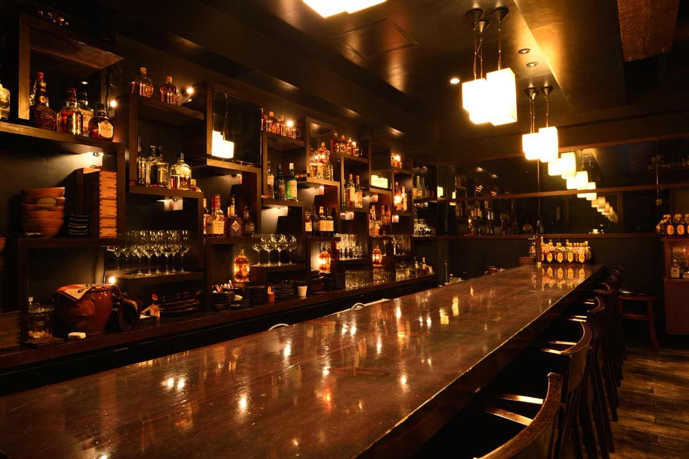

株式会社けいか堂飲料店Kadoya Group / Yushima, Tokyo
株式会社けいか堂飲料店Kadoya Group / Yushima, Tokyo
ENGLISH
バーカドヤ｜18:00〜翌4:00（L.O.3:00）・日曜定休
03-3831-4775
 株式会社けいか堂飲料店Kadoya Group / Yushima, Tokyo
株式会社けいか堂飲料店Kadoya Group / Yushima, Tokyo
照明が落ち着く、
暖かく懐かしい雰囲気。
角地にひっそりと佇む「バー カドヤ」。店内にも“角”を意識したデザインが施されています。初めて入ってもどこか懐かしく、来たことがあるような気持ちになる、ほっとするバーです。
名物は、キンキンに冷えた銅のマグカップで出てくる角ハイボール。チーズの醤油漬やカドヤの煮込といった本格的なアテから、昔ながらのナポリタンまで、お酒が進む料理を揃えています。一人でも、二軒目でも、どうぞお気軽に。

価格は税込の目安です。仕入れや季節により内容・価格が変わることがあります。
| 店名 | バーカドヤ（KADOYA 角ヤ） |
|---|---|
| 住所 | 〒113-0034 東京都文京区湯島3-45-3 小林ビル 1F |
| 電話 | 03-3831-4775 |
| 営業時間 | 18:00〜翌4:00（L.O. 3:00） |
| 定休日 | 日曜日 |
| お支払い | VISAMasterJCBAMEXDiners ※電子マネー・QRコード決済は非対応 |
| 予算の目安 | 2,000〜3,000円 |
| アクセス | 東京メトロ千代田線 湯島駅 徒歩2分／銀座線 上野広小路駅 徒歩5分／JR御徒町駅 徒歩6分 |
| SNS・掲載 |
感染症の流行状況により、営業時間・定休日が記載と異なる場合がございます。ご来店時は事前に店舗にご確認ください。
バーカドヤの最新情報はFacebookページでお知らせしています。